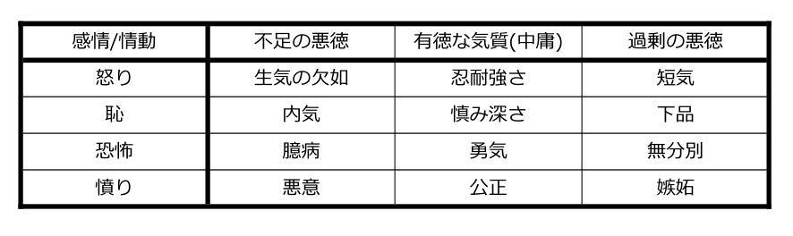
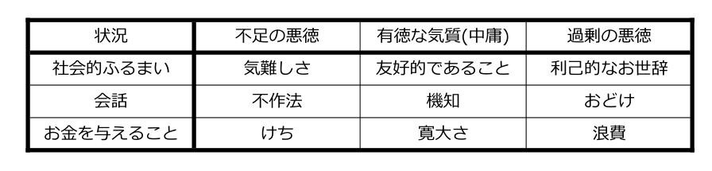

3 アリストテレスの徳倫理学
見返りのために徳を追求することは、金の鋤で鉄を掘るようなものである。35
3.1 アリストテレスの徳倫理学入門
アリストテレス(紀元前384–322年)は、倫理学、形而上学、生物学、植物学などの分野の学者でした。したがって、彼の道徳的哲学は、単独の行為を孤立させて評価するというのではなく、人間の広範な性格を評価することに基づいているというほうが適切です。実際に、これはアリストテレスの徳倫理学を功利主義やカント倫理学の両方から隔てるものです。
3.2 機能の議論
アリストテレスは目的論者でした。この用語は、功利主義のような規範的な倫理理論に適用されるような「目的論的」というラベルに関連していますが、混同されるべきではありません。アリストテレスは、すべての対象物が、彼が目的因と呼ぶものを持っていると信じていたことによって、目的論者でした。ギリシャ語の用語テロス(telos)は、対象物の目的、目標、狙い、あるいは真の最終的な機能と私たちが呼ぶようなものを指します。確かに、宗教の哲学に関連した単元でアリストテレスを勉強している人は、アリストテレスの一般的な目的論的世界観と彼の倫理学の研究との間のつながりを認識するかもしれません。
アリストテレスは、「…機能や活動を持っているすべてのものにとって、良さと「善」は機能の中に存在すると考えられる」と主張します。36 アリストテレスの主張は、本質的には、その機能、つまり目標や目的を達成するには、対象物がそれ自身の良さを達成するということです。すべての対象物は、このタイプの真の機能を持っており、すべての対象物は、良さを達成する方法を持っています。たとえば、椅子のテロスは座席を提供することであり、椅子は、ひずんで崩れ落ちることなく人間の下半身の曲線を支持するときに良い椅子となります。同様に、アリストテレスが言うには、彫刻家、芸術家、音楽家を良いものとするのは、彫刻家、芸術家、音楽家としての彼らの機能の素晴らしい適切な腕前です。
この目的論的(機能と目的)な基盤を持った世界観は、アリストテレスの倫理的な推論を理解するのに必要な背景です。椅子が本当の機能や目的を持つように、アリストテレスは人間にはある1つのテロスがあると信じています。アリストテレスは、人間にとっての良いものとは、人間の機能が何であるかを導き出すことによるものである、と特定します。彼はそのために、機能の議論を用います。
3.2.1 機能の議論
- すべての対象物はテロスを有している。
- ある対象物は、そのテロスを適切に確保しているときに良いものである。
上述してきたことを考慮に入れて、今までのところこれらの議論のステップが明らかであればうれしいです。この時点から、アリストテレスはその考えを具体的に人間のほうへ向けます。
- 人間のテロスとは推論することである。
- したがって、人間にとって良いことは、理性に従って行動することである。
私たちの真の機能を導き出すにあたり、アリストテレスは人間を他の生きた動物から切り離すようなその特徴を見ています。アリストテレスによると、人類を残りの世界から切り離すものとは、推論する能力だけではなく理性に従って行動する能力でもあります。そのため、椅子の機能は独自の差別化する特性に由来するのと同様に、人間の機能は私たちの独自の差別化する特性に関連しており、私たちはこの真の機能あるいはテロスに従って行動するときに良さを達成します。
人が真の機能を持っているという考えは、特にあなたが自分自身の宗教的世界観を持っていない場合には、奇妙に聞こえるかもしれません。しかしながら、特にあなたのような人に対して、アリストテレスはこう書いています。「…目、手、足、そして一般的な各部分がそれぞれの機能を持っているように、人間も同様に、他のもの全てから離れたある1つの機能を持っている、とはっきり主張することが果たしてできるのだろうか?」37
私たちが私たちの構成要素に機能を帰属させるであろうことに基づいて — たとえば、私たちは何が腎臓を良いものとするのかを知っています — アリストテレスもまた、私たちが全体としてある1つの機能を持っていることは不合理ではないと考えています。確かにこれは、もし私たちが他の対象物を考慮するならば、もっともらしく思われるかもしれません。たとえば、自動車の構成部品は個々の機能を持っていますが、車それ自体は、全体として、それが良い車であるか否かを決定するようなそれ自体の機能を持っています。
3.3 アリストテレス的な良さ
前の議論に基づくと、私たちがテロスに従って行動するとき、人間にとっての良い人生が達成されます。しかしながら、私たちは、良さの概念を一般的かつ抽象的なものとして残すのではなく、ある人にとって何が良いのかをより具体的に言うことができます。アリストテレスは、もし私たちが良い人生を完全に達成したならば私たちが経験する状態のことを、ギリシャ語のエウダイモニアという言葉を使って捉えます。アリストテレスによると、エウダイモニアとは、すべての人間が、それが人間の存在の目的と目標であるとして目指すべき状態のことです。この状態に達するためには、私たちは理性に従って行動しなければなりません。アリストテレスがエウダイモニアによって何を意味するのかを正しく理解することは、彼の徳倫理学の道徳的立場を理解する上で不可欠です。
エウダイモニアはいろいろな形で翻訳されており、完全な翻訳はまだ特定されていません。すべての翻訳にはそれぞれ問題がありますが、開花として理解されたエウダイモニアというのがおそらく最も役立つ翻訳であり、単純に幸福と翻訳した場合よりも改善されています。以下の例は、これをより明確にするでしょう。
ナオミは非常に才能のあるピアニストです。ある日、彼女は単に自分が幸せになるような音楽を奏でています。もしかしたらそれは、テレビドラマ「ネイバーズ」の曲や、「きらきら星」の演奏なのかもしれません。別の日には、彼女は非常に難しいショパン-ゴドフスキーのエチュードような複雑な音楽を演奏しています。これらの演奏もまたナオミを幸せにするかもしれませんが、前者の演奏というよりもむしろ後者の演奏によってのみ、彼女はピアニストとして開花しているように見えます。もし私たちが機能の言葉を用いるとしたら、どちらの演奏もナオミを幸せにしますが、彼女はより複雑な作品をもって開花しているときにのみ、ピアニストとしての彼女の機能を果たします(そして彼女は良いピアニストとなります)。
人生で開花することは、私たちを幸せにするかもしれませんが、幸福そのものは私たちのテロスに従って行動することと必ずしもうまく対応していません。おそらく、もし私たちがエウダイモニアの翻訳として幸福という言葉を好むのであれば、私たちは実際にまたは真に幸せであることを意味します。しかし、私たちの真の機能にしたがって行動するという状態を記述するときには、開花するというエウダイモニアの理解にとどまるほうが簡単かもしれません。
アリストテレスは、ある人生が「…完璧な良さや徳に則った心の能動的な行使」を含むときには、その人生はエウダイモン(エウダイモニアの形容詞)であると結論づけています。38エウダイモニアは、私たちの肉体的または動物的な性質の行使の結果ではなく、私たちのはっきりとした人間の理性的および認知的側面の行使の結果として確保されます。
3.4 エウダイモニアと徳
第3節の最後に与えられた引用は、この章の説明の部分における徳への最初の直接的な言及でした。ここまででアリストテレスの理論的な前提が明らかにされたために、私たちは、アリストテレスによる徳の概念とその道徳的思考への結びつきを適切に説明して評価することを始められます。
アリストテレスによれば、徳は性格の気質や人格の特性です。私たちの行動に孤立して焦点を当てるのではなく、私たちの気質と私たちの性格に対して焦点を当てることによって、アリストテレスの徳倫理学は、行為中心の道徳理論ではなく、行為主体中心の道徳理論であるというラベルを得ることになりました。
3.4.1 行為中心の道徳理論
功利主義とカント倫理学は、道徳的な評価と判断を下す際に行動に焦点を当てているため、行為中心の道徳理論の異なる2つの例となっています。行為中心の道徳理論は、目的論的あるいは義務論的であるかもしれませんし、絶対主義的あるいは相対主義的であるかもしれませんが、それらは、特定の行為が道徳的価値の担い手である — 正しいものであるか、あるいは間違っているものである — という点において共通の世界観を共有します。
3.4.2 行為主体中心の道徳理論
アリストテレスの徳倫理学は、1つだけの行動ではなく、人々とその性格に一番の焦点を当てるため、行為主体中心の理論となっています。アリストテレスにとって、道徳性とは、「私は何をすべきか?」という質問ではなく、「私はどうあるべきか?」という質問にもっと関係があります。私たちがこの章の後半で見るように、もし私たちが後の質問に答えるならば、最初の質問の答えはおのずと明らかになるでしょう。アリストテレスの徳倫理学を説明して評価する際には、あなたは、行動の道徳性に関する具体的なコメントではなく、性格に焦点を当てていることを心に留めておかなければなりません。
アリストテレスは、性格の特性や心理的な気質としての徳に言及します。徳は、状況に適切に関連した特定の気質であり、私たちの機能につながれ、理性に従った行動を促します。ふたたび、より具体的な例によって、アリストテレスが実際にどのように徳を特定しているかが明らかになるでしょう。
私たち全員が、時折、怒りの感情を経験します。たとえば、私の義理の息子が他の人の分をとっておかずに、残りのスナック菓子を考えなしに全部食べてしまったら、私は怒るかもしれません。あるいは彼は、義理の父親が26の異なる仕事をやりくりしていて、たまたま時間を忘れてしまったために、職場に迎えに来てもらうのが遅れて1～2分余計に待たなければならないときに怒りを感じるかもしれません(彼にとってどれほど不公平なことか…)。とにかく、私が言ったように、アリストテレスに戻ると、「誰もが怒ることがある — それは簡単だ。しかし、正しい人に対して、正しい程度で、正しい時に、正しい目的のために、そして正しい方法で怒る — それは容易ではない。」39
アリストテレスにとって、徳は感情そのものではなく、その感情に対応する適切な心理的な気質です。つまり、適切な応答です。ある感情に対する正しい反応は、中庸に基づいて行動するものとして記述されます。中庸とは、過度でも不十分でもない反応のことです。以下の表は、これをより明確にしています。

怒りは感情であり、したがって徳でも悪徳でもありません。しかしながら、怒りに対する正しい応答(2つの極端の間の中庸)は、短気や生気の欠如ではなく、忍耐強さです。徳は感情ではなく性格の気質的な反応です。これは全体的に見ると、私たちの性格と私たちが何者であるかを定義します。
中庸は、有徳な気質が常に「中道的な」行動を起こすものであることを示唆していると見られるべきではありません。もし誰かが武装していないときにテロリストかもしれない人の攻撃を止めるために命を危険にさらすとしたら、彼らの行動は勇敢なというよりは、むしろ軽率であるかもしれません。しかしながら、もし重い鈍器で武装していたならば、その人の生命を危険にさらす行動は、軽率ではなく、勇気のある有徳なものであるかもしれません。中庸とは、私たちが完全な不活動と息をもつかせぬ大騒ぎの間のどこかで常に行動することを示唆するものとして理解されるべきではなく、過剰と不足の悪徳の間で行動することを示唆するものとして理解されるべきです。そのような行動にはたぶん、極度の勇気や並外れた忍耐が含まれるでしょう。
感情に加えて、アリストテレスは、私たちが徳をもって状況に対応するかもしれないことを示唆しています。彼は次の例を示唆しています。

私たちは、これらの例を考察する際には、アリストテレスの徳倫理学の行為主体中心の性質を念頭に置いておかなければなりません。ある人は、1つのジョークがおどけの側にそれてしまったからと言って機知の気質を失うわけではないですし、ある1つの機会に慈善団体に寄付をしなかったために、寛大でなくなることもありません。有徳かどうかにかかわらず、私たちの心理的な気質は、ある人の一般的な性格の判断と、いくつかの状況での単一の行動よりも多くの観察とによってのみ評価されるべきです。もし私たちが理性に従って行動し、人間としての機能を果たすならば、私たちのふるまいは一般に、有徳な性格の特性や気質を反映しています。
3.5 徳を発展させる
アリストテレスに広く帰されている引用の中で、ウィル・ダラント(1885–1981年)は、「…私たちは、私たちが繰り返し行うことでできている。卓越とは、行為ではなく習慣である」と言うことによってアリストテレスの見方を要約しました。40私たちが一晩で何かに卓越することができないのは、かなり明らかです。どんな試みでも、進歩を遂げるということは、常にゆっくりと時間をかけた努力と実践の両方を必要とする旅路です。アリストテレスは、良い人生を送るための試みにおいて、有徳な性格の特性を発展させようとしている人間にも同じことが当てはまると考えています。あなたは、この章を読んだ後、自分がアリストテレスの徳の倫理の観点にたどり着いたと感じ、したがって、より機知があり、より勇気があり、より寛大になるように心が動かされるかもしれません。しかし、あなたはその決意によってこれらの特性を単に得ることはできません。むしろ、あなたがそれらを発展させるためには、あなたはこれらの特性を実践しなければなりません。
有徳的な性格を養うことは、実践によって起こるものです。アリストテレスは、徳のスキルの発展を他のスキルの発展と比較します。彼は「…人々は建築することによって建築家になる」、「…私たちは公正な行為をすることによって公正になる」と言います。41私たちは、レンガが特定の場所にはまっていなければならないことを知っているかもしれませんが、私たちがそのレンガを適切に配置する方法を知っているときにのみ、私たちは良い建築家になります。建築には単なる知的知識だけでなく実践的なスキルが必要であり、同じことが有徳な性格の特性を発展させることにも適用されます。倫理的な性格は、単なる知的教育だけでなく、実践的な学習と習慣的な行動によって発展させられます。
最終的に、有徳な個人は、良い建築家がさまざまな道具の場所や一連の計画に応答するのを容易にこなせるのと同様に、感情/状況に徳をもって応答するのを容易にこなせるようになるでしょう。熟練した建築家は、壁を適切に構築する方法を知っていることに関して言えば、抽象的な熟考を必要とせず、熟練したサイクリストは、コーナーを回る際にスピードを正しく合わせる方法について抽象的な熟考を必要としないでしょう。
同様に、徳に熟練した人は、友好的であることや寛大さが可能な状況に直面したときに抽象的な熟考を必要としないでしょう。彼らは、いかにして行動するかをより直観的なレベルで単に知ります。これは、建築家、サイクリスト、有徳な人々が、時には、異常な状況や困難な状況(たとえば、倫理学の場合は道徳的ジレンマ)で何をすべきかを具体的に熟考する必要はないと言うわけではありませんが、適切に熟練した人々にとっては、通常の状況では適切な応答が自然なものとなっているでしょう。
有徳な性格の特性を発展させるときに熟練する必要があるために、アリストテレスは、有徳になるには生涯の仕事を必要とすると示唆しています。本棚を1つ作ってもあなたが熟練した建築家になることはないというのは、ただ1つの勇気ある行為があなたを勇気と有徳の人にすることはないのと同じです。あなたの地位を決定するのはスキルの繰り返しです。そして、有徳な性格の発展には、1週間の徳倫理学のブートキャンプではなく、一生の仕事が必要です。
3.6 実践的な知恵(フロネシス)
アリストテレスは、より有徳になるために、どのように正確に私たちが(悲しくなるほど現代的な用語を使えば)「スキルアップ」できるかについて、いくつかの詳細を提示しています。アリストテレスは、行動の目的が、中庸により明らかにされた関連する有徳な特性によって明確にされるということを示唆します。たとえば、ある状況における私たちの目的は、勇気をもって、あるいは寛大に反応することです。私たちのより実践的な知恵(「フロネシス」の翻訳)のスキルを発達させることにより、私たちはある具体的な状況において何が正確な勇気や寛大さであり、私たちがどの程度正確にそれを達成できるかについて、より良く解明することができるようになります。
実践的な知恵のスキルを発展させることによって、私たちは、自分たちの有徳な性格の特性を適切に実践へ移すことができます。アリストテレス主義者にとっては、実践的な知恵は、実際には発展させるための最も重要な有徳な気質や性格の特性であるかもしれません。なぜなら、実践的な知恵のスキルがなければ、不作法ではなく機知のあるような、臆病ではなく勇気のあるような行動を実際に実践するのは難しくなるかもしれないからです。論理的な推論の鋭い感覚を持たない哲学者になることを想像してみてください。あなたは苦労するでしょう。なぜなら、それは他の哲学的スキルがよって立つような基本的な財であると思われるためです。それは徳にもあてはまり、実践的な知恵は、さまざまな感情、情動、状況にどうやって有徳に対応するかについての私たちの本能的な知識をサポートします。
もしこれでもまだやや不明瞭だと思われる場合には、私たちが有徳だと思っている他人の行動を見ることによって、実践的な知恵についての私たちの感覚を発展させることができるかもしれません。たとえば、子供は、他人の例に従うことによって、どのようにして有徳になるかを学ぶ必要があるのはかなり確かでしょう。もし私たちが、所与の状況における勇気ある反応が何であるかを見分ける自分たちの能力について不確かな場合、私たちは、例としてのソクラテス、イエス、ガンディー、マンデラまたはキングの行動によって導かれるかもしれません。もし私たちが他の人の知恵と徳から学ぶならば、建築家の見習いが師匠から学ぶのと同じように、徳の見習いも徳を実践する上でもっと熟練した人から学ぶことができます。うまくいけば、そのような徳の見習いは、最終的に彼ら自身の2本の足で立つことができるようになる場所に到達し、彼らの個人的に発展させた実践的な知恵の感覚を得ることになります。
3.7 自発的行動、非自発的行動、および道徳的責任
アリストテレスは、行動ではなく行為主体に焦点を当てているにもかかわらず、特定の行動に関連した潜在的な道徳的責任についての議論に寄与するものをいくらか有しています。私たちは、行動を2つの明白なカテゴリーに分けることができます。
- 自発的行動
- 非自発的行動
非常に広く言えば、ある行動は、自由に選ばれたときに自発的であり、そうでないときは非自発的です — これらの用語は、アリストテレスの考え方に沿って、次でより正確に定義されます。人は自発的な行動に対して道徳的責任を負うことになるかもしれず、非自発的行動に対してはそうではないかもしれないため、これらの区別は倫理学において重要です。アリストテレスによると、行動は、以下のやり方で理解されるように、力や無知によって影響を受けていない限り、自発的です。
3.7.1 物理的な力
ルーベンが仕事から家に帰る途中で車を運転していると想像してみてください。突然、彼の同乗者が彼の手をつかんで、彼がハンドルを回すように強制して、車を対向車線に突っ込ませます。この物理的な力がなければ、ルーベンはハンドルを回転させなかったでしょうし、そして、彼は引き起こされた損害を非常に後悔しています。アリストテレスによると、ルーベンの行動は、この外部の物理的な力のために非自発的であり、彼は事故に対する道徳的責任はありません。
3.7.2 心理的な力
銀行に銃で武装した強盗の集団が押し入った時に、そこで働いていたデイヴィッドのことを考えてみましょう。デイヴィッドは、もし彼が金庫を開けなければ、彼は殺されるだろうと言われています。この極端な心理的圧力の下では、デイヴィッドが金庫を開くことは非自発的であるとアリストテレスは認めるでしょう。なぜなら、そうでもなければデイヴィッドは金庫を開くことはなかったでしょうし、彼はそうしたことをとても後悔しています。これに基づいて、デイヴィッドはこの盗難についていかなる方法でも道徳的責任を負いません。
力に加えて、特定のタイプの無知もまた、非自発的としてラベル付けされた行動を支持することができます。
3.7.3 無知からの行動
才能のあるミュージシャンであるリースは、ある友人のためにサプライズコンサートを行いたいと考えており、数週間バリー・マニロウのバックカタログにある曲を練習しています。しかしながら、サプライズコンサートの数日前に、リースの知らないうちに、彼の友人は、マニロウに対する激しい、そして非常に個人的な嫌悪感を抱きました。そのため、リースが舞台に立って、古典的な曲「コパカバーナ」の演奏を始めると、彼の友人は苦痛で飛び出して行ってしまいました。この事態では、リースは変化した状況に気付いていなかったため、リースが友人の気分を害したときには非自発的に行動していたとアリストテレスは認めるでしょう。彼は、曲を演奏するときに、悪意ではなく無知から行動しました。この認識的な(または知識に関連した)障壁がなければ、リースは彼がしたような行動はしなかったであろうし、彼は引き起こされた苦痛を非常に後悔しています。これらの理由から、リースは彼の歌の選択に起因する混乱の道徳的責任を負いません。
重要なこととして、アリストテレスは、無知を含むすべての行動が非自発的に分類され、それにより、道徳的責任についての関連する主張を阻止することを認めていません。
3.7.4 無知のままでの行動
ローレンスは飲み過ぎており、頭の上に道路コーンをかぶって信号機を登ることを選択します。ローレンスのアルコール消費は、社会的関係、雇用、警察の対応の面でのこの行動の結果について、彼を少なくとも一時的に無知にしています。しかしながら、アリストテレスにとっては、これは彼の行動が非自発的であるということを意味しません。なぜならローレンスは、外部の認識的な(または知識ベースの)障壁による無知からではなく、無知のままで行動しているためです。したがってローレンスは、彼が自分で作り上げた無知の結果として、道徳的責任を免れることはできません。
最後に、アリストテレスはまた、第3の行動形態 — 非随意的な行動 — を特定します。これは無知な行動にも関係しています。
3.7.5 後悔のない無知からの行動
リースと彼によるマニロウの演奏のケースに戻りますが、生じさせた苦痛についてのリースの後悔の部分を取り除いてみてください。もし認識的な隔たりが橋渡しされてリースが友人の新たに獲得した音楽観を知った瞬間に、リースが彼の行動についてなんの後悔も感じない場合、アリストテレスはそれを非自発的ではなく非随意的な行動として分類するでしょう。この行動は、リースが無知から行動したため、自発的にはなりえませんが、後悔の感覚がなければ、リースは何が起こるかを知っていたとしてもこの行動を起こすであろうために、それは明らかに非自発的ではありません。
上記の詳細は重要であり、あなた自身の例はあなたの理解と説明に役立つでしょう。しかしながら、要約はさっぱりとするほど簡単です。もしある行動が自発的なものであれば、それは力と無知を免れてなされたものであり、私たちは行為者に道徳的責任を持たせることができます。しかしながら、もしある行動が非自発的なものであれば、行為者は力に基づいてまたは無知から行動するため、道徳的に責任がありません。
3.8 異議:不明確な指針
あなた自身が道徳的なジレンマの真っ只中に巻き込まれていると考えてみてください。あなたは何をすべきかを知りたいと思い、功利主義やカント倫理学によって提供された指針を参考にして、遂行できるさまざまな具体的な行動が道徳的に正しいか道徳的に間違っているかを知ることができます。アリストテレスの徳倫理学の助言を求めるためにとりかかってみると、利己的なお世辞と嫉妬を避けながら、寛大で、忍耐強く、慎み深く行動するという提案からの冷ややかな慰めを得ることができます。この場合には、あなたは、一般的にどのように生きるかを知ることよりも実際に何をすべきかの知識を探し求めているでしょう。したがって徳倫理学は、ただの1つの理論であり、有益な道徳的指針ではなく、役立たずの非特定的な道徳的な決まり文句であると非難されるかもしれません。
これに対応して、徳倫理学者は、真に有徳な人々がこの状況でどのように反応するかを考えることから私たちはどのように行動するかを学ぶことができる、と私たちに思い出させるかもしれませんが、この返答はそれ自体で心配を引き起こします。私たちはどうやったら有徳な人を特定することができるのでしょうか?あるいは、私たちはどうやったら彼らの行動を潜在的に斬新な状況へと適用することができるのでしょうか?ロザリンド・ハーストハウス(1943年-)は、徳倫理学の擁護者ではありますが、このよくある異議を言葉に表しており、「徳倫理学は私たちが何をするべきかを私たちに教えてはくれない。なぜなら徳倫理学はそれができないからである。それはいかなるものであれ何らの指針をも私たちに与えてくれない。誰が[私たちが指針としてみるべき]有徳な行為主体なのだろうか?」42 もし徳倫理学者が、どのように行動するか迷っている人 — もしかしたら友人を警察に通報するかどうか、または慈善分野で働くようにキャリアを変えるかどうかを迷っているのかもしれません — に対して提供することができるものが、「ソクラテスやガンディーといった道徳的模範と、彼らがこのような状況でどのように行動するかを見てみなさい」だけであるならば、私たちはこの異議を唱える人に共感するかもしれません。なぜなら、私たちの道徳的なジレンマは、単に古いものの繰り返しではなく、新しい状況であることが非常によくあるためです。(意図的に具体的な例をとると)もし私たちがイエスを道徳的に有徳なロールモデルであると考えているとして、「イエスならば何をするか」と尋ねることは、納税者に膨大な費用と潜在的な財政リスクとを負担させるような再生可能エネルギー技術の補助金の増額に賛成票を投ずるか否かを決定しようとしている議員にとっては、あまり役に立たないように思われます。
ハーストハウスは、彼女の異議の表明にもかかわらず、これは徳倫理学の不公平な特徴づけであると考えています。ハーストハウスは、徳倫理学が「v-ルール」の形で指針を提供することを示唆しています。それは、「正直なことをする」または「嫉妬を避ける」という形式の指針となるルールです。43 これらのルールは具体的ではないかもしれませんが、多くの異なった道徳的な状況にわたって指針として有効なものです。このレベルの指針が規範的な道徳理論にとって適していると信じるかどうかは、あなたが自分自身で行うべき、そして擁護するべき判断です。
3.9 異議:衝突する徳
指針の欠如による一般的な異議に関連して、もう1つの発展された異議は、徳が衝突するような状況に私たちはどのように対処するべきかという疑問を呈しています。勇敢なふるまいは、場合によっては、友好的であることの欠如を意味するかもしれません。寛大さは慎み深さを脅かすかもしれません。このような状況では、「有徳であれ」という示唆は、やはり役に立たないほど曖昧であるように思われます。
この特定の異議に対して、アリストテレス的な徳倫理学者は実践的な知恵の概念を思い起こさせることができ、熟練した有徳な人は複雑な道徳的状況に適切に対応するであろうことを示唆します。たとえば、フォーミュラワンの車は、素晴らしいスピードと繊細なハンドリングの両方を備えていれば良いものでしょう。そして、この2つの徳の間の道でかじ取りすることは、熟練したエンジニアに任されています。実践的な知恵を持つ人は、どのような所与の状況においても、明らかに衝突する徳の間の道をかじ取りすることができる、というのも同じことです。徳倫理学者は、すべての状況を網羅した文章化された道徳のルールブックの作成には関心がなく、その代わりに、どのように行動するかを決める際の有徳な人のスキルに対して責任を負わせます。これが強みであるか弱みであるかは、やはりあなたが判断し、擁護するものです。
3.10 異議:循環性
アリストテレスの徳倫理学に対するまったく異なる異議は、論理的循環性に関する懸念に基づいています。アリストテレスによると、次のような記述が正しいように見えます。
- ある行為は、もしそれが有徳な人がその状況で行うであろう行為であれば、有徳である。
- ある人は、有徳な方法で行為するときには、有徳である。
しかしながら、これは循環的な推論に見えます。もし有徳な行為が有徳な人の観点から理解されるものの、有徳な人が有徳な行為の観点から理解されるならば、私たちは役立たずの循環論的推論を手にしています。
ジュリア・アナス(1946年-)は、この明らかな問題に対して、この推論の中では危険なほど循環しているものはないと主張することによって応答しています。なぜなら、それは単に私たちの有徳な気質を発展させることを私たちがどのように学ぶのかを反映したものに過ぎないからです。44アナスはピアノ演奏の類推を示唆しています:
- 偉大なピアノ演奏は、偉大なピアニストが行うものです。
- あるピアニストは、彼が偉大なピアノ演奏を「行う」ときに、偉大です。
この場合には、推論には厄介な循環性はないようです。偉大なピアニストが演奏するものは何であれ素晴らしいものであるというわけではなく、むしろ偉大なピアニストは偉大な音楽を作る技能を持っているということです。同じことが徳に対しても言えます。有徳な人々は、単に彼らの実際の行動のためにではなく、彼らが何者であるか、そして彼らの行動がどのように動機づけられているのかによって、有徳であるからです。実際には、どの行動が徳と適切に合致しているかについて明確なガイドを提供することを意図しているものは、彼らのスキルと性格の特質です。したがって、もし私たちがある行為が有徳であるか否かを判断したい場合、私たちは有徳な人物がその状況で何をするかを評価することができますが、これは、有徳なものが具体的に有徳な個人の行動によって決定されることを意味しません。問題は、観念上で有徳な特徴を持つ人が、実際にその行動を実行するかどうかです。有徳な人々は、生きて呼吸をしている具体的なガイドであり、抽象的な有徳な性格の気質に関連する行動を理解するのを助けています。
3.11 異議:エウダイモニアへの貢献
この章で考察されたアリストテレスの徳倫理学に対する最後の明確な異議は、有徳に生きるということはエウダイモンな人生を確保する私たちの能力に貢献することになる、というアリストテレス主義者の主張から生まれたものです。この見解への挑戦は、ある種の気質は有徳であるように見えるかもしれないが、実際には私たちの良き生の開花や確保には貢献しているようには思われないという事実に基づいているでしょう。
この実際にあり得そうな異議の例として、以下を考慮してみましょう。シェリーはしばしば過ちに対して寛大であると言われており、時間と労力の両面で彼女自身にかなりのコストをかけて、他の人が問題を解決するのを助けるために、彼女の大部分の時間を定期的に捧げています。合理的に彼女に期待される限界を超えて働くことで、私たちはシェリーのことを彼女の寛大な人格をもって有徳であると述べたいと思うかもしれません。しかしながら、私たちは、シェリーが他の人たちのためにあまりにも一生懸命働くことによって、シェリーが自分自身の開花する能力を不当に制限しているかどうか疑問に思うかもしれません。
この異議のこの最初の表明への回答は、想像するのに難しくはありません。私たちは、シェリーは過剰の悪徳に屈しており、彼女の時間を寛大にではなくむしろ浪費していると言うかもしれません。あるいは、私たちは彼女が浪費家ではなく寛大であることを受け入れて、この有徳な性格の特性は彼女が開花するのを助けているという不快な結論を受け入れるかもしれません。もし私たちがシェリーは彼女の時間を無駄にしているという記述を除外すれば、この第2の主張はもっと妥当と思われるかもしれません。
それでも、もしあなたが、誰かのことを勇気というよりむしろ無分別、あるいは寛大というよりむしろ無駄として適切に記述できる状況と、そしてこれらの特性のために、その状況が実際に彼ら自身の開花に貢献しているということを想定できるのであれば、この異議は成り立つかもしれません。もしあなたがこの一般的な異議を支持しようとする場合には、あなた自身のあり得そうなケースを考慮してみるべきです。
3.12 道徳的な良さと個人的な良さ
アリストテレスにとって、道徳的な良さと個人的な良さは密接に関連しているように見えるかもしれません。結局のところ、有徳な人は慈善を行い、友好的であり等々。そして、これらの特性と気質の結果として、彼らはエウダイモニアへ向けた旅を進めるとともに、他者の生活もより良いものとするでしょう。福利に必要とされるものの輪郭を描こうとするライバル理論としての快楽主義(これは喜びだけが福利の唯一の源であると主張します — 第1章を参照)は、失敗すると考えられるかもしれません。なぜなら、快楽主義は理性にしたがって行動することの重要性を軽視しており、したがって、快楽主義者は彼らのテロスや真の機能に従って生きていないからです。
アリストテレスは、彼の理想とする有徳な人について、彼らは統合された心理状態を持ち、合理的と非合理的な心理状態が1つの声でもって話す、と述べています。逆に、非有徳な人とは、その合理的要素と非合理的要素との間で衝突する心理状態を持つことになります。彼ら自身の個人的な視点から見て誰がより良い人生を送っているか — 幸せな快楽主義者か、あるいはアリストテレスの有徳な人か — を考える際には、やはり、あなたはあなた自身の理由づけされた判断を行うべきです。
私たちがこの章を終えるにあたって、アリストテレスは、有徳な人生を生きることがある人にとってのエウダイモニアの状態を保証するのに十分であるとは示唆していないと注意しておくことが重要です。貧困、病気、または早すぎる死のような外部要因は、エウダイモニアに向けた人の進歩を駄目にするかもしれません。しかしながら、アリストテレスにとって、エウダイモニアの達成のためには有徳であることが必要です。徳の発展なしには、たとえ人が貧困、病気、孤独などを避けたとしても、彼らが開花することは不可能です。
3.13 まとめ
アリストテレスの徳倫理学は、この本の中で考察される他の行為中心の規範的道徳理論とは本質的に非常に異なります。これがそれ自体で美点であるか欠点であるかは、あなた自身の判断の問題です。成文化され固定された道徳のルールブックの欠如は、多くの人が欠陥として見ており、他の人はそれをこの理論の重要な強みとして認識しています。一方で、アリストテレスの目的論的な主張に気まずさを感じる人もおり、彼らは、人間にとって可能な客観的に良い人生があるということを喜んで受け入れる人たちとは違うでしょう。それにもかかわらず、アリストテレスの徳倫理学が明確に規範的な道徳的描写を提供し、それがあなたの熟考にふさわしい理論であることはほとんど疑いがありません。
3.14 学生によくある間違い
- 徳を感情として理解する。
- 人間の機能(エウダイモニア)を誤解する。
- 中庸は「中立」または「中間」の行動を常に示唆していると考える。
- 自発的、非自発的、非随意的な行動の間の不正確な区別。
- 徳倫理学は、道徳的な状況では何らの指針も与えないと主張する。
- 徳倫理学は、行動に無関心であると主張する。
3.15 検討すべき問題
- 誰がより良い人生を持っていますか?幸福な快楽主義者ですか、それとも有徳な個人ですか?
- 徳は固定的で絶対的なものですか?あるいは、徳は文化や時代と関連していますか?
- 道徳的になるということはスキルですか?道徳性は「それを知っていること」または「やり方を知っていること」に基づいていますか?
- 徳倫理学は有用な指針を提供できますか?
- 中庸は有徳な特徴を見つけ出すのに有益な方法ですか?
- いくつかの徳は他のものよりも重要ですか?なぜ?
- あなたはエウダイモニアに貢献しないような徳を考えることができますか?
- あなたはエウダイモニアに貢献するものであるが、徳ではないような何かを考えることができますか?
- もし人生の目的がないのであれば、アリストテレスの徳倫理学に同意することに何の意味合いがありますか?
- もしいくつかのなし得る行動に直面したときに徳が衝突するように見える場合、あなたは何をすべきですか?
- 誰が有徳なロールモデルとみなされるのでしょうか?なぜ?
- 人間はテロスや適切な機能を持っていますか?
3.16 重要な用語
行為中心
行為主体中心
気質
エウダイモニア
フロネシス
徳
テロス
中庸
3.17 参照文献
Annas, Julia, Intelligent Virtue (Oxford: Oxford University Press, 2011).
Aristotle, The Nicomachean Ethics, translated by William David Ross (Oxford: Clarendon Press, 1908), freely available at http://sacred-texts.com/cla/ari/nico/index.htm
[アリストテレス全集 15「ニコマコス倫理学」内山勝利・神崎繁・中畑正志編集委員、岩波書店、2014年]
Hursthouse, Rosalind, ‘Normative Virtue Ethics’, in Ethical Theory, ed. by Russ Shafer-Landau (Oxford: Blackwell Publishing, 2007), pp. 701–09.
Panin, Ivan, Thoughts (Grafton: Ivan Panin, 1887), freely available at https://ia601405.us.archive.org/8/items/thoughts00panigoog/thoughts00panigoog.pdf
I. Panin, Thoughts, p. 92, https://ia601405.us.archive.org/8/items/thoughts00panigoog/thoughts00panigoog.pdf↩
Aristotle, The Nicomachean Ethics, http://sacred-texts.com/cla/ari/nico/index.htm↩
Ibid.↩
Ibid.↩
Ibid.↩
W. Durant, The Story of Philosophy, p. 76.↩
Aristotle, The Nicomachean Ethics, http://sacred-texts.com/cla/ari/nico/index.htm↩
R. Hursthouse, ‘Normative Virtue Ethics’, pp. 701–03.↩
Ibid.↩
J. Annas, Intelligent Virtue.↩